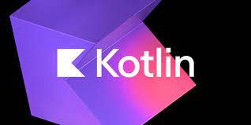

Nowaday's technology sectors are rapidly developing, programming languages play a vital role in powering various applications and systems. In this blog post, we'll explore the top 10 programming languages that are in high demand in simplicity. 1] PYTHON: - Python is a versatile and powerful programming language known for its simplicity, extensive range of libraries and frameworks. Uses; ~Data analysis and machine learning with libraries like NumPy, Pandas and TensorFlow. ~Scripting, automation and backend development. ~Web development, including frameworks like Flask and Django. Merits; ~Simple syntax and beginners friendly. ~Larger libraries and frameworks. ~High productivity. Demerit; ~Slower execution speed compared to lower-level languages like C++ or Rust. 2]JavaScript: - JavaScript is a dynamic scripting language primarily used for web development, enabling interactive and responsive functionalities on websites. Uses; ~Fullstrack development with Node.js as back-end. ~Mobile app development using frameworks like React Native. Merits; ~Rich interface. ~Faster websites. ~Large community. Demerit; ~Browser compatibility issues.. 3]JAVA: - Java's stability, performance and larger libraries and frameworks make it a reliable choice for various domains. Uses; ~Web and android app development. ~Software development. Merits; ~Top-notch security. ~Rich api. Demerit; ~lengthy code. 4]C++: - C++ is a powerful programming language known for its efficiency and performance. Uses; ~Favourite for game development. ~System programming and High-performance applications. Merits; ~Fast and powerful. ~High level of control and efficiency. Demerit; ~Complex syntax. 5]C#: - C# is a modern, object-oriented programming language developed by Microsoft, designed for building a wide range of applications. Uses; ~Windows application development with .NET framework. ~Backend development with ASP.NET. ~Game development using Unity. Merits; ~Faster development time. ~Similar syntax to Java. Demerits; ~Limited cross-platform. ~The code needs to be compiled every time a change is made. 6]TypeScript: - TypeScript is a statically-typed superset of JavaScript that enhances tooling capabilities and increases code readability. Use; ~Large-scale web application development. Merits; ~Improved maintainability and scalability of JavaScript projects. ~Provides static typing for better tooling. Demerits; ~Additional build step required to transpile TypeScript to JavaScript. 7]:Swift- Swift is a modern, intuitive programming language developed by Apple for building efficient applications for their own platforms. Use; ~IOS, macOS, watchOS, and tvOS app development. Merits; ~Modern syntax and simplicity. ~High safety features. Demerits; ~Limited to Apple platforms. ~Smaller community. 8]Go: - Golang which is also known as go is created by Google,is designed to be efficient, concurrent and scalable. Uses; ~Cloud-native applications. ~Network servers and distributed systems. Merits; ~Fast compilation and execution speed. ~Built-in support for parallelism and concurrency. Demerit; ~Lack of generics. 9]Rust: - Rust is a systems programming language that emphasizes performance, concurrency and memory safety. Use; ~Systems programming and low-level development. Merit; ~Strong concurrency and parallelism support. ~Memory safety. Demerits; ~Smaller community. ~complex concepts. 10]Kotlin: -  Kotlin is a statically-typed programming language that has shorter syntax with modern features. Uses; ~Android app development. Merits; ~Concise syntax. ~Interoperability with Java. Demerits; ~Little bit slower. ~Limited resources. The top 10 programming languages mentioned above—Python, JavaScript, Java, C++, C#, TypeScript, Swift, Go, Rust, and Kotlin, and to note that the demand for programming languages may fluctuate over time. The choice of language depends on the specific use case, project requirements, and personal preferences, and essential to consider their performance, community support, available libraries too.